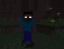
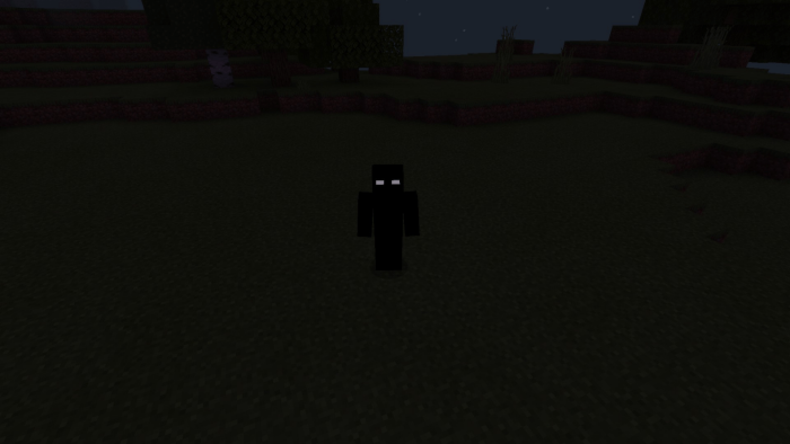

Херобрин
Херобрин (Herobrine) — легендарный персонаж из интернет-фольклора, связанного с Minecraft. Считается, что это призрачная фигура, похожая на Стива, но с полностью белыми глазами без зрачков.
Описание
Согласно легендам, Херобрин появляется в мире игрока и строит странные структуры, такие как пирамиды из песка, двухблочные туннели и лабиринты. Он также может удалять деревья, оставляя только пни, и создавать случайные лавовые озера.
История появления
Первые упоминания о Херобрине появились в 2010 году на форуме Minecraft. Пользователь рассказал историю о своем мертвом брате, который "вернулся" в игру. Позже Нотч, создатель Minecraft, официально заявил, что Херобрин никогда не существовал в игре.
Нул (Null)
Нул — еще один мифический персонаж из Minecraft, часто ассоциируемый с Херобрином. В отличие от Херобрина, у Нула полностью черная кожа и белые глаза.
Особенности
Считается, что Нул более агрессивен, чем Херобрин. Он может телепортироваться, становиться невидимым и атаковать игрока. Нул часто ассоциируется с пустотой и небытием.
Entity 303
Entity 303 — еще один персонаж из Minecraft-фольклора. Согласно легенде, это бывший сотрудник Mojang, который был уволен и создал мод для мести.
Характеристики
| Параметр | Значение |
|---|---|
| Здоровье | 600 единиц |
| Урон | 20 единиц |
| Скорость | Быстрее игрока |
| Особенности | Иммунитет к лаве и огню, может телепортироваться |